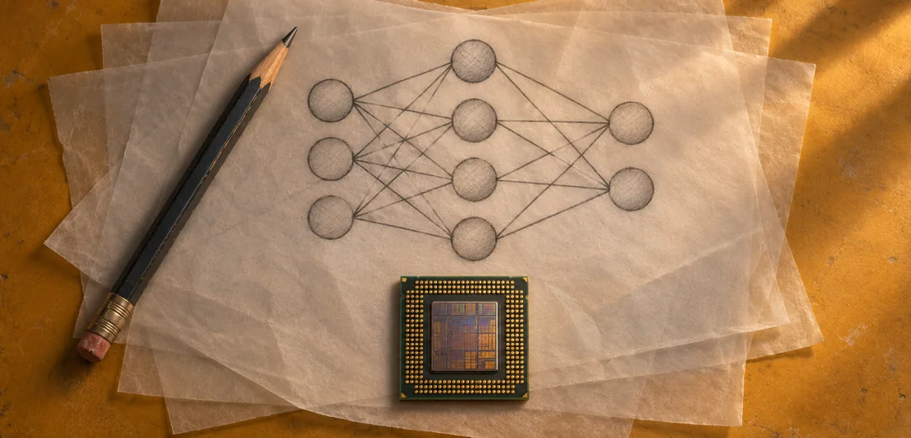
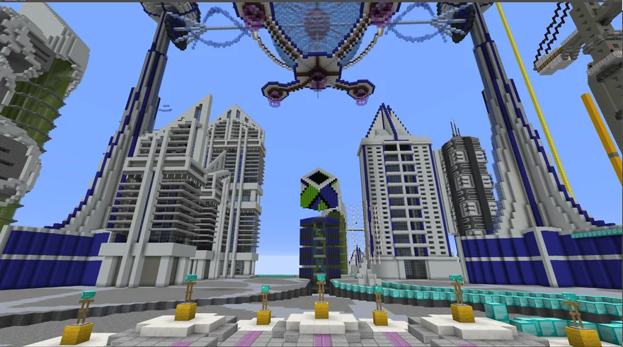
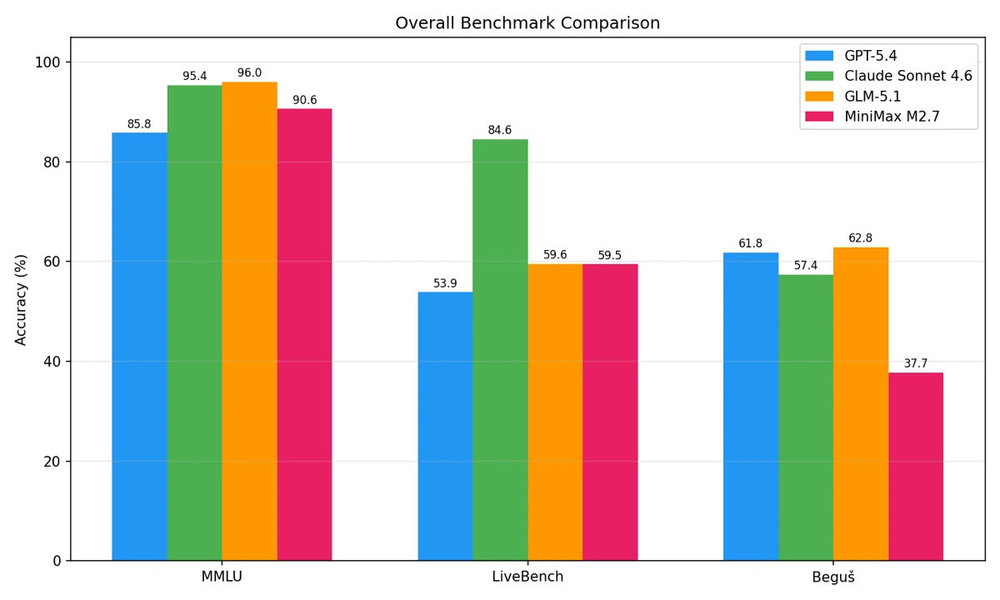

FoxStar Agent
A production agent system for WeChat communities. FoxStar routes work across language models, delegates research to a background agent, and keeps a gaming guild’s rosters and attendance records in sync with its group chats.
I build AI agents for browsers, voice calls and group chats, and design tests to find out where they fall short.
A production agent system for WeChat communities. FoxStar routes work across language models, delegates research to a background agent, and keeps a gaming guild’s rosters and attendance records in sync with its group chats.
A comparison of transaction-graph models and tabular baselines for detecting rare laundering activity in IBM’s AML dataset.
An agent that buys information from other agents and sells briefings assembled from news, market data and social signals.
A browser agent that remembers successful action sequences and tests whether it can reuse them on a later run.
A test bench for voice agents that brings call evaluations and integration checks into one review.

I worked out how a neural network learns on paper, then implemented it in Python. These five projects trace my experiments from individual weight updates to tool-calling agents and local inference.
I’m building QubeMC into an AI company for gaming. I’m starting with tools that help game-server operators diagnose problems and automate routine maintenance while keeping control over what changes on their servers.

Giving agents tools, permissions and a plan a person can inspect.
Explore Paigent StudioDesigning tasks that reveal what a model can do with unfamiliar language.
Read the capstoneConnecting web services, real-time streams and the infrastructure that runs them.
Explore LitmusMy SFSU capstone compares four language models across static knowledge questions, dynamic reasoning tasks and expert linguistics problems.

Best Global Submission
Autonomous Business Hackathon · Hosted by NeverminedAffiliation · QubeMC LLCBest Use of Render
Autonomous Agent Hackathon · Hosted by Creators CornerAffiliation · QubeMC LLCBest Use of You.com APIs
Continual Learning Hackathon · Hosted by Creators CornerAffiliation · San Francisco State UniversityThe REAL Agent Challenge (Agent Track)
AGI Inc. × OpenAI × Lovable REAL Agent Challenge · Hosted by AGI Inc.Affiliation · San Francisco State UniversityBest Use of Sanity
Production Agents Hackathon · Hosted by Creators CornerAffiliation · San Francisco State UniversityBest Use of TRM Labs
Production Agents Hackathon · Hosted by Creators CornerAffiliation · San Francisco State UniversityFrontegg Sponsor Prize (Best Use of FrontMCP)
Self-Evolving Agents Hackathon · Hosted by Creators CornerAffiliation · San Francisco State UniversityI earned an M.A. in Linguistics and an M.A. Computational Linguistics Certificate at San Francisco State University. My research there explored what happens to meaning when a language model simplifies a passage.
I’m a nine-time hackathon winner. I like building something a teammate can try the same day, whether it’s a browser agent that learns a repeated task or a tool that explains why a crypto wallet was flagged.
More about my background